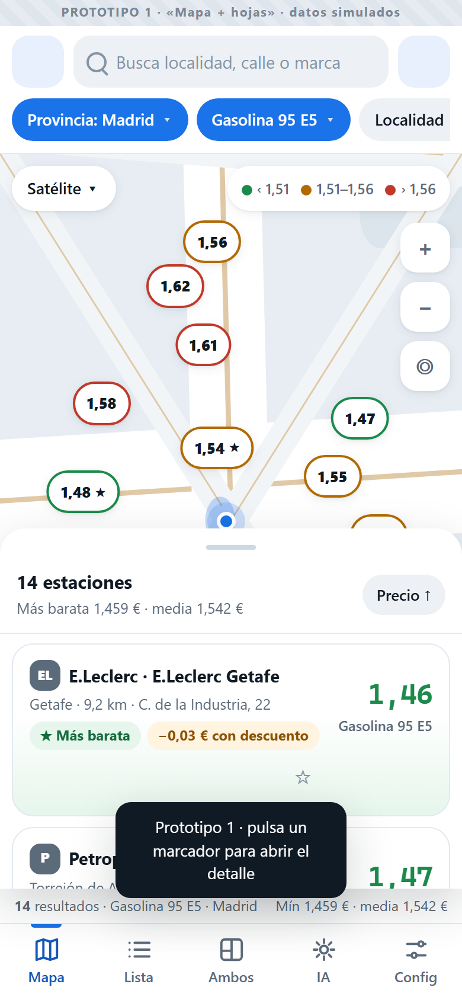

1
Mapa + hojas
Móvil primero · hojas arrastrables

El mapa manda y la lista vive en una hoja inferior que se arrastra en tres alturas (peek, media, llena). En PC la hoja se convierte en panel lateral.
- ¿Se siente natural la hoja en móvil?
- ¿Los filtros detrás de chips son suficientes?
- ¿El histórico con tooltip se entiende?
MóvilMapaHojas